Đổi phân phối dịch chuyển cho điểm theo chủ đề hoặc theo tập tin cậy; HITS gán mỗi trang hai điểm.
Giải thuật nền tảng của Khoa học dữ liệu
Học kỳ 1 · Năm học 2026–2027
Trường Đại học Công nghệ · Đại học Quốc gia Hà Nội
Nhắc lại: $(M_0)_{ij}=1/d_j$ khi $j\to i$, $d_j>0$; cột là trang nguồn; cột nút cụt bằng $0$.
Nhắc lại: $r^{t+1}=\beta M_0r^t+\beta\delta^tu+(1-\beta)u$; phần $(1-\beta)u$ gọi là dịch chuyển (teleport).
Ký hiệu: đồ thị $G=(V,E)$, $n$ trang, $\ell$ cạnh (Bài 03 viết $m$); $d_j$ là bậc ra của $j$.
Ký hiệu: G4 là đồ thị bốn trang của Bài 03: A→B, C, D; B→A, D; C→A; D→B, C.
Quy ước: véc-tơ cột; dấu phẩy thập phân.
Đọc trước: Leskovec, Rajaraman, Ullman, Mining of Massive Datasets (MMDS), ấn bản 3, Chương 5, §§5.3–5.5, tr.195–208.
Nhu cầu: $10^9$ người dùng, mỗi người một véc-tơ: $8\cdot10^{18}$ byte; thứ hạng theo ngữ cảnh, khó thao túng, tách hai vai trò.
Nhu cầu: với “jaguar”, thứ tự trang phải phụ thuộc ngữ cảnh.
Động vật: trang về loài báo đốm; ô tô: trang về hãng xe Jaguar.
Đầu vào: trang, liên kết và chủ đề đã biết.
Đầu ra: thứ tự trang theo chủ đề.
Kết luận: PageRank toàn cục cho cùng thứ tự ở cả hai ngữ cảnh.
Cách trực tiếp lưu cho mỗi người dùng một véc-tơ PageRank trên toàn web.
$10^9$ người dùng, $n=10^9$ trang, 8 byte một điểm: $10^9\cdot8\cdot10^9=8\cdot10^{18}$ byte.
Kết luận: $k=16$ chủ đề: $2{,}56\cdot10^{11}$ byte, ít hơn khoảng $3\cdot10^7$ lần.
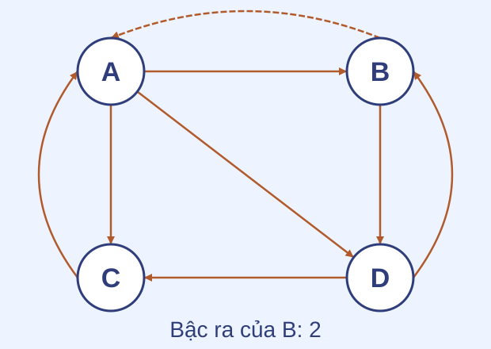
Đồ thị G4
Giả sử $r_A=r_B=r_C=r_D=1/4$ và $\beta=4/5$.
Câu hỏi:
Muốn ưu tiên trang thuộc một chủ đề, phải đổi nơi đến của bước dịch chuyển mà giữ nguyên phép lặp.
Tập dịch chuyển · Điểm cố định · Bất biến tổng điểm · Ghép chủ đề · Tiền tính
Nhu cầu: dịch chuyển đều tới $n$ trang cho mọi truy vấn cùng một thứ tự.
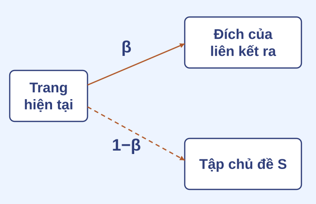
Với xác suất $\beta$: đi theo một liên kết ra, chia đều giữa các liên kết.
Với xác suất $1-\beta$: dịch chuyển tới tập chủ đề $S$, thay cho $n$ trang của Bài 03.
Lưu ý: trang ngoài $S$ vẫn nhận điểm qua liên kết; đồ thị giữ nguyên.
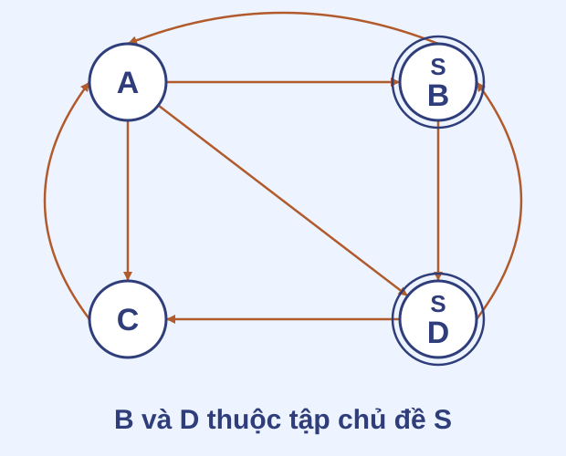
$\beta=4/5$, $S=\{B,D\}$; thứ tự thành phần A, B, C, D.
$v$ là phân phối chọn trang đích khi thực hiện dịch chuyển: $$v=(0,1/2,0,1/2)^\mathsf T.$$
Tính $r^1$, $r^2$ từ $r^0=v$; G4 không có nút cụt nên $$r^{t+1}=\beta M_0r^t+(1-\beta)v.$$
Diễn giải: mỗi vòng thêm $(1-\beta)v$: B, D nhận $1/10$; A, C nhận $0$.
Tính $r^1=\beta M_0r^0+(1-\beta)v$ với $r^0=v=(0,1/2,0,1/2)^\mathsf T$, $\beta=4/5$.
G4: A→B, C, D; B→A, D; C→A; D→B, C.
| Trang | Theo liên kết $\beta(M_0r^0)_i$ | Dịch chuyển $(1-\beta)v_i$ | Điểm mới $r_i^1$ |
|---|---|---|---|
| A | $1/5$ | $0$ | $1/5$ |
| B | $1/5$ | $1/10$ | $3/10$ |
| C | $1/5$ | $0$ | $1/5$ |
| D | $1/5$ | $1/10$ | $3/10$ |
Tại A: $(4/5)[(1/2)(1/2)+1\cdot0]=1/5$. Tổng điểm mới bằng 1.
Tính $r^2$, rồi $r^*_v$ từ $r=\beta M_0r+(1-\beta)v$, $\sum_ir_i=1$.
Tại A ở vòng 2: $r_A^2=\tfrac45\big(\tfrac12\cdot\tfrac3{10}+\tfrac15\big)=\tfrac7{25}$.
| Trang | $r^1$ | $r^2$ | Điểm cố định $r^*_v$ |
|---|---|---|---|
| A | $1/5$ | $7/25$ | $9/35$ |
| B | $3/10$ | $41/150$ | $59/210$ |
| C | $1/5$ | $13/75$ | $19/105$ |
| D | $3/10$ | $41/150$ | $59/210$ |
Kết luận: B, D có điểm cố định lớn hơn A; trang ngoài $S$ vẫn có điểm dương.
Đầu vào: danh sách kề $\mathrm{out}[j]$ của $G$, $n\ge1$; phân phối $v$; $0<\beta<1$; ngưỡng $\tau>0$, số vòng tối đa $K\ge1$.
(1) theo liên kết; (2) bù nút cụt; (3) dịch chuyển.
Khi có nút cụt, $\delta^t=\sum_{j:d_j=0}r_j^t$ được bù đều theo $u_i=1/n$ như Bài 03; G4 có $\delta^t=0$.
Đầu ra: véc-tơ $r$, số vòng $t$, độ thay đổi cuối $\Delta$, trạng thái đạt ngưỡng hoặc hết số vòng.
r ← v
với t = 1, ..., K:
delta ← tổng r[j] trên các nút cụt
với mỗi i: new[i] ← beta * delta / n + (1 - beta) * v[i]
với mỗi j có d[j] > 0:
với mỗi i thuộc out[j]:
new[i] ← new[i] + beta * r[j] / d[j]
Delta ← tổng |new[i] - r[i]|
r ← new
nếu Delta ≤ tau: trả về (r, t, Delta, đạt ngưỡng)
trả về (r, K, Delta, hết số vòng)
delta là $\delta$ của vòng; Delta là $\|r^t-r^{t-1}\|_1$; mọi đóng góp của một vòng dùng $r$ cũ.
Bất biến: $r^t\ge0$ và $\sum_i r_i^t=1$.
| Thành phần | Tổng điểm đóng góp |
|---|---|
| Theo cạnh từ các trang không cụt | $\beta(1-\delta^t)$ |
| Bù nút cụt | $\beta\delta^t$ |
| Dịch chuyển theo $v$ | $1-\beta$ |
| Tổng | $\beta(1-\delta^t)+\beta\delta^t+(1-\beta)=1$ |
Kết luận: $r^0=v$ là phân phối, nên mọi $r^t$ là phân phối khi $v\ge0$, $\sum_iv_i=1$.
Nhắc lại: $\bar M=M_0+u\,\mathbf 1_{\mathcal D}^{\mathsf T}\ge0$, mọi cột tổng $1$ (Bài 03).
Định lý. Với $0<\beta<1$ và phân phối $v$ không phụ thuộc $r$, $F_v(r)=\beta\bar Mr+(1-\beta)v$ co hệ số $\beta$ theo $\|\cdot\|_1$, có đúng một điểm cố định $r^*_v$, là phân phối, và
Chứng minh. $\|r^{t+1}-r^*_v\|_1\le\beta\|r^t-r^*_v\|_1\le\beta\Delta_t+\beta\|r^{t+1}-r^*_v\|_1$; chuyển vế.
Ý nghĩa: với $\beta=4/5$, cận là $4\Delta_t$; ngưỡng $\tau=\varepsilon/4$ bảo đảm sai số $\varepsilon$.
Tính lại PageRank cho mỗi tổ hợp trọng số tốn $\Theta(K(n+\ell))$ mỗi truy vấn.
Ký hiệu: $k$ chủ đề, chỉ số $\theta=1,\ldots,k$; trọng số $w_\theta\ge0$, $\sum_\theta w_\theta=1$.
| Ký hiệu | Vai trò |
|---|---|
| $v^{(\theta)}\in\mathbb R^n$ | Phân phối dịch chuyển đầu vào của chủ đề $\theta$ |
| $r^{(\theta)}=r^*_{v^{(\theta)}}$ | Điểm cố định PageRank của chủ đề $\theta$ trên $n$ trang |
Mỗi chủ đề dùng cùng $\bar M$ và $\beta$: $r^{(\theta)}=\beta\bar Mr^{(\theta)}+(1-\beta)v^{(\theta)}$.
G4, $\beta=4/5$; $r^{(1)}$ của $S=\{\mathrm B,\mathrm D\}$, $r^{(2)}$ là PageRank toàn cục ($v^{(2)}=u$); $w=(1/3,2/3)$.
Tính $r^*_v$ với $v=\tfrac13v^{(1)}+\tfrac23u=(1/6,1/3,1/6,1/3)^\mathsf T$ bằng hai cách.
| Trang | $r^{(1)}$ | $r^{(2)}$ | Ghép $\tfrac13r^{(1)}+\tfrac23r^{(2)}$ |
|---|---|---|---|
| A | $9/35$ | $9/28$ | $3/10$ |
| B, D | $59/210$ | $19/84$ | $11/45$ |
| C | $19/105$ | $19/84$ | $19/90$ |
Kết luận: giải trực tiếp $r=F_v(r)$ cho $r_{\mathrm A}=3/10$ và cùng véc-tơ với cột ghép.
Mệnh đề. Mọi chủ đề dùng cùng $G$, $\beta$, $\bar M$; $w_\theta\ge0$, $\sum_\theta w_\theta=1$. Khi đó
Chứng minh. Nhân phương trình chủ đề $\theta$ với $w_\theta$ rồi cộng:
$$\sum_\theta w_\theta r^{(\theta)}=\beta\bar M\sum_\theta w_\theta r^{(\theta)}+(1-\beta)\sum_\theta w_\theta v^{(\theta)};$$
điểm cố định của $F_v$ duy nhất nên tổng bằng $r^*_v$.
Ý nghĩa: mỗi chủ đề có sai số $\le\varepsilon$ thì véc-tơ ghép có sai số $\le\varepsilon$.
Tính tuyến tính tách công việc thành hai pha; mỗi người dùng chỉ lưu $k$ trọng số.
Chọn các phân phối $v^{(\theta)}$; tính và lưu các $r^{(\theta)}$ trên $n$ trang.
Trọng số $w_\theta$; tập ứng viên $C$, $c=|C|$; với $i\in C$:
$$q_i=\sum_{\theta=1}^k w_\theta r_i^{(\theta)}.$$
Kết luận: $q_i$ là thành phần $i$ của $r^*_v$ với $v=\sum_\theta w_\theta v^{(\theta)}$; không lặp lại PageRank.
Mô hình: phép toán vô hướng chi phí đơn vị; danh sách kề; chủ đề $\theta$ chạy $K_\theta\le K$ vòng.
Mỗi vòng duyệt $\ell$ cạnh một lần và $n$ trang ba lần: $3n+\ell$ thao tác.
| Bước | Số lần | Chi phí mỗi lần | Đóng góp |
|---|---|---|---|
| Cộng điểm theo cạnh | $\sum_\theta K_\theta$ | $\ell$ | $\ell\sum_\theta K_\theta$ |
| Tổng nút cụt, bù, đo $\Delta$ | $\sum_\theta K_\theta$ | $3n$ | $3n\sum_\theta K_\theta$ |
| Tổng | $(3n+\ell)\sum_\theta K_\theta=O(kK(n+\ell))$ |
Bộ nhớ: đầu vào $\Theta(n+\ell)$, làm việc ba mảng $n$ số, kết quả $kn$ số.
Kết luận: bộ nhớ kết quả tăng theo $k$, không theo số người dùng.
Mô hình: như bảng tiền tính; $c=|C|$ trang ứng viên; $k$ trọng số đã có.
Mỗi ứng viên đọc $k$ điểm đã lưu và $k$ trọng số.
| Bước | Số lần | Chi phí mỗi lần | Đóng góp |
|---|---|---|---|
| Ghép $q_i$ | $c$ | $k$ phép nhân, $k-1$ phép cộng | $c(2k-1)=\Theta(kc)$ |
Lưu ý: chưa gồm tìm ứng viên, xác định $w_\theta$ và sắp xếp.
Kết luận: $k=16$: $31c$ thao tác, không phụ thuộc $n$ và $\ell$.
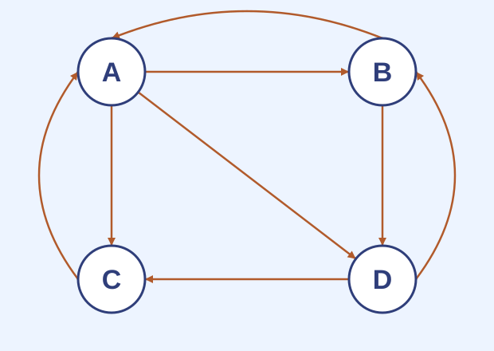
$\beta=4/5$, $S=\{\mathrm B,\mathrm D\}$.
$r^1=(1/5,3/10,1/5,3/10)^\mathsf T$
$r^2=(7/25,41/150,13/75,41/150)^\mathsf T$
Câu hỏi:
Tính $r_{\mathrm C}^3$ và chỉ rõ các trang đóng góp.
Tính $\Delta_1=\|r^2-r^1\|_1$ và cận $\beta\Delta_1/(1-\beta)$ cho sai số của $r^2$.
Muốn biết liên kết rác làm tăng điểm đến đâu, phải tính điểm cố định của trang đích trong một cụm thao túng.
Cụm thao túng liên kết · Trang hỗ trợ · Ba nguồn điểm · Hệ số khuếch đại
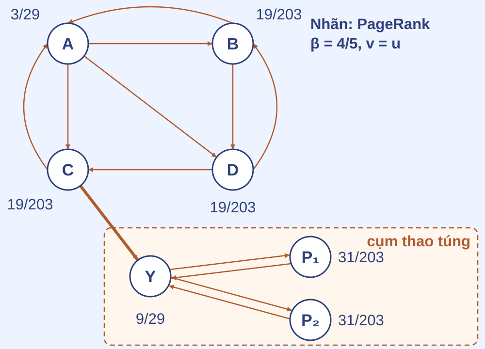
Nhu cầu: trên G4, A đứng đầu với $9/28$.
Thêm ba trang sở hữu Y, $\mathrm P_1$, $\mathrm P_2$ và cạnh $\mathrm C\to\mathrm Y$: Y đứng đầu với $9/29$, A còn $3/29$.
Liên kết rác (link spam) là liên kết tạo để tăng PageRank một trang hơn mức nội dung của nó.
G4 thêm $\mathrm C\to\mathrm Y$, $\mathrm Y\to\mathrm P_1,\mathrm P_2$, $\mathrm P_1\to\mathrm Y$, $\mathrm P_2\to\mathrm Y$; $n=7$, $\beta=4/5$, $v=u$.
Tính $r^*=\tfrac45M_0r^*+\tfrac1{35}\mathbf 1$; bốn hàng A, B, C, D chỉ chứa điểm của A, B, C, D.
| Trang | Phương trình | $r^*$ |
|---|---|---|
| A | $r_{\mathrm A}=\tfrac45\sigma+\tfrac1{35}$ | $3/29$ |
| B, C, D | $\sigma=\tfrac49r_{\mathrm A}+\tfrac1{21}$ | $19/203$ |
| Y | $r_{\mathrm Y}=\tfrac45\big(\tfrac\sigma2+2r_{\mathrm P}\big)+\tfrac1{35}$ | $9/29$ |
| $\mathrm P_1$, $\mathrm P_2$ | $r_{\mathrm P}=\tfrac25r_{\mathrm Y}+\tfrac1{35}$ | $31/203$ |
Kiểm tra: tổng $\tfrac{21+57+63+62}{203}=1$.
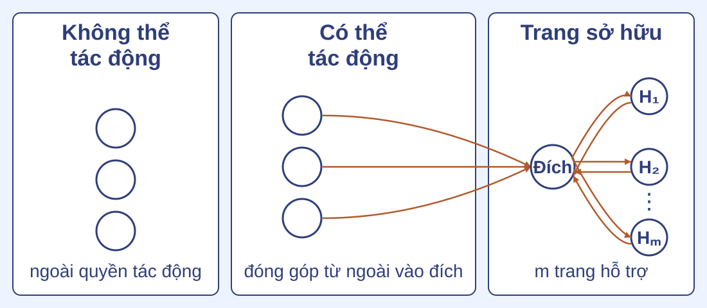
Cụm thao túng liên kết (còn gọi là trại thư rác, spam farm):
một trang đích (target page) và ${m\ge1}$ trang hỗ trợ (supporting pages).
Trang đích trỏ tới mọi trang hỗ trợ, không cạnh nào khác.
Mỗi trang hỗ trợ chỉ trỏ tới và chỉ nhận cạnh từ trang đích.
Giả thiết: không nút cụt; ${n\ge m+1}$.
Ký hiệu: $y$, $p$ là điểm cố định của đích và của mỗi trang hỗ trợ; $b=(1-\beta)/n$.
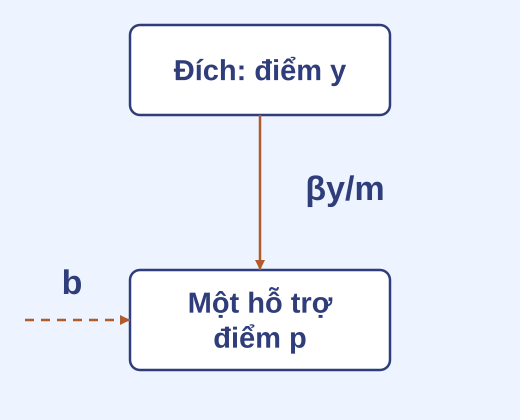
Đích có đúng $m$ liên kết ra; mỗi hỗ trợ chỉ nhận cạnh từ đích.
| Nguồn điểm tại một hỗ trợ | Đóng góp |
|---|---|
| Điểm theo cạnh từ đích | $\beta y/m$ |
| Dịch chuyển đều | $b$ |
$x$ là tổng đóng góp từ ngoài vào đích, đã nhân $\beta$ và chia bậc ra.
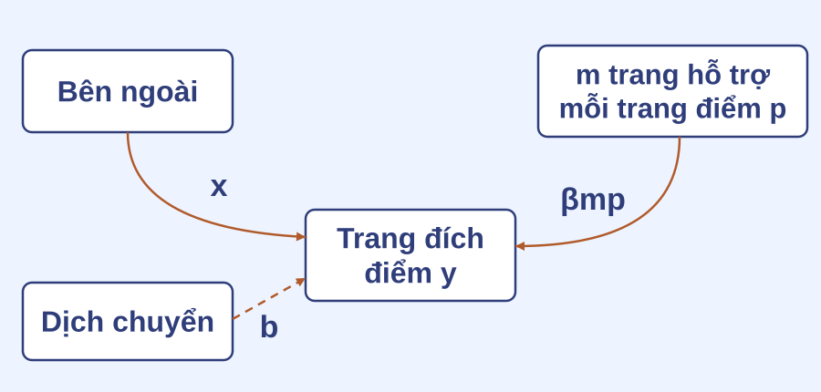
| Nguồn điểm tại đích | Đóng góp |
|---|---|
| Liên kết từ ngoài | $x$ |
| $m$ trang hỗ trợ, mỗi trang chỉ trỏ tới đích | $\beta mp$ |
| Dịch chuyển đều tới đích | $b$ |
Phần điểm bắt nguồn từ đích đi qua hai bước theo liên kết:
Với $p=\beta y/m+b$ và $y=x+\beta mp+b$:
$$y=x+\beta^2y+\beta mb+b,$$ $$y=\frac{x+\beta mb+b}{1-\beta^2},\qquad b=\frac{1-\beta}{n}.$$
Ý nghĩa: hai bước tạo $\beta^2$; số hỗ trợ $m$ triệt tiêu trong phần điểm quay lại.
$n=7$, $m=2$, $\beta=4/5$; nguồn ngoài duy nhất là C, bậc ra 2, $r^*_{\mathrm C}=19/203$.
Tính $b$, $x$, rồi $y$, $p$ theo hai công thức của cụm.
$b=\tfrac15\cdot\tfrac17=\tfrac1{35}$, $x=\tfrac45\cdot\tfrac12\cdot\tfrac{19}{203}=\tfrac{38}{1015}$.
$p=\tfrac45\cdot\tfrac12\cdot\tfrac9{29}+\tfrac1{35}=\tfrac{31}{203}$.
Kết luận: trùng $r^*_{\mathrm Y}$ và $r^*_{\mathrm P_1}$ của hệ bảy phương trình.
Thay $b=(1-\beta)/n$, bỏ số hạng $1/(n(1+\beta))$ của dịch chuyển trực tiếp tới đích:
Với $\beta=0{,}85=17/20$:
| Thành phần | Hệ số |
|---|---|
| Đóng góp từ ngoài $x$ | $400/111\approx3{,}6036$ |
| Tỷ lệ trang hỗ trợ $m/n$ | $17/37\approx0{,}45946$ |
Kết luận: cụm nhân đóng góp ngoài khoảng $3{,}6$ lần, thêm khoảng $0{,}46\,m/n$.
Tìm các cụm như MMDS Hình 5.16, loại khỏi chỉ mục.
Lưu ý: người tạo rác chuyển sang biến thể khác.
Hạ điểm trang rác mà không định vị cụm, dùng tập trang đã đánh giá đáng tin.
Kết luận: hướng thứ hai cần một tập trang tin cậy mà người tạo rác không kiểm soát.
Mô hình cụm của MMDS Hình 5.16, đồ thị không có nút cụt.
Câu hỏi:
Muốn tìm trang có điểm do liên kết rác, phải so PageRank với điểm lan từ tập trang tin cậy.
Tập trang tin cậy · Phép lặp TrustRank · Hiệu hai điểm · Khối lượng rác · Chi phí
Nhu cầu: trên đồ thị bảy trang, PageRank xếp Y đầu mà không chỉ ra cụm.
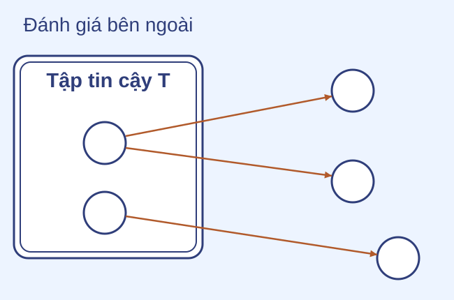
Tập tin cậy (trusted set) $T$: phần tập hạt giống (seed set) được xác nhận không phải rác.
TrustRank: PageRank theo chủ đề với $v_T$ đều trên $T$.
Giả thiết: cách ly gần đúng (approximate isolation): $T$ hiếm khi trỏ tới trang rác.
Đầu vào: $G$, $0<\beta<1$, tập $T\ne\varnothing$, $\tau$, $K$; $(v_T)_i=1/|T|$ nếu $i\in T$, bằng $0$ ngoài $T$.
$\rho_i^t$ là điểm TrustRank của trang $i$ ở vòng $t$; $\rho^0=v_T$; $\delta_\rho^t$, $u$ như trước.
(1) theo liên kết; (2) bù nút cụt; (3) dịch chuyển vào $T$.
Đầu ra: $\rho$ xấp xỉ và trạng thái dừng; giả mã như PageRank theo chủ đề với $r\mapsto\rho$, $v\mapsto v_T$.
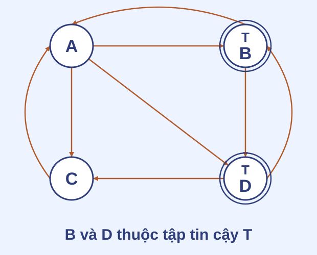
$\beta=4/5$. Giả sử B, D đã được đánh giá tin cậy: $T=\{\mathrm B,\mathrm D\}$, $v_T=(0,1/2,0,1/2)^\mathsf T$.
Tính $\rho$ từ $\rho=\beta\bar M\rho+(1-\beta)v_T$.
| Trang | TrustRank $\rho_i$ |
|---|---|
| A | $9/35$ |
| B | $59/210$ |
| C | $19/105$ |
| D | $59/210$ |
Kết luận: $v_T$ trùng $v$ của ví dụ tập chủ đề {B, D}, nên $\rho=r^*_v$; $T$ mang nghĩa tập tin cậy.
Ngưỡng trên TrustRank đánh dấu C trước: $\rho_{\mathrm C}=19/105$ nhỏ nhất, dù $r_{\mathrm C}=r_{\mathrm B}=19/84$.
Tính $r_i-\rho_i$; $r$ là PageRank của Bài 03, cùng G4, $\beta=4/5$.
| Trang | $r_i$, PageRank (Bài 03) | $\rho_i$, theo $v_T$ | Hiệu $r_i-\rho_i$ |
|---|---|---|---|
| A | $9/28$ | $9/35$ | $9/140$ |
| B | $19/84$ | $59/210$ | $-23/420$ |
| C | $19/84$ | $19/105$ | $19/420$ |
| D | $19/84$ | $59/210$ | $-23/420$ |
Kết luận: A, C giảm khi chuyển sang TrustRank; B, D tăng.
Định nghĩa. Với $r_i>0$, khối lượng rác (spam mass) là phần của $r_i$ bị mất khi dịch chuyển chỉ vào $T$: $$s_i=\frac{r_i-\rho_i}{r_i}=1-\frac{\rho_i}{r_i}.$$
| Trang | Phép tính | $s_i$ |
|---|---|---|
| A | $(9/140)/(9/28)$ | $1/5$ |
| C | $(19/420)/(19/84)$ | $1/5$ |
| B, D | $(-23/420)/(19/84)$ | $-23/95$ |
Diễn giải: âm hoặc dương nhỏ thì có lẽ không phải rác; gần $1$ thì có lẽ là rác.
Mô hình: như PageRank; PageRank chạy $K_r$ vòng, TrustRank chạy $K_\rho$ vòng.
Hai phép lặp, mỗi vòng $3n+\ell$ thao tác; sau đó một lượt qua $n$ trang.
| Bước | Số lần | Chi phí mỗi lần | Đóng góp |
|---|---|---|---|
| PageRank | $K_r$ | $3n+\ell$ | $\Theta(K_r(n+\ell))$ |
| TrustRank | $K_\rho$ | $3n+\ell$ | $\Theta(K_\rho(n+\ell))$ |
| Tính $s_i$ | $n$ | một phép trừ, một phép chia | $2n$ |
| Đánh giá tập tin cậy | — | ngoài mô hình | — |
Kết luận: trang có $s_i$ gần $1$ được ưu tiên rà soát, không cần định vị cụm.
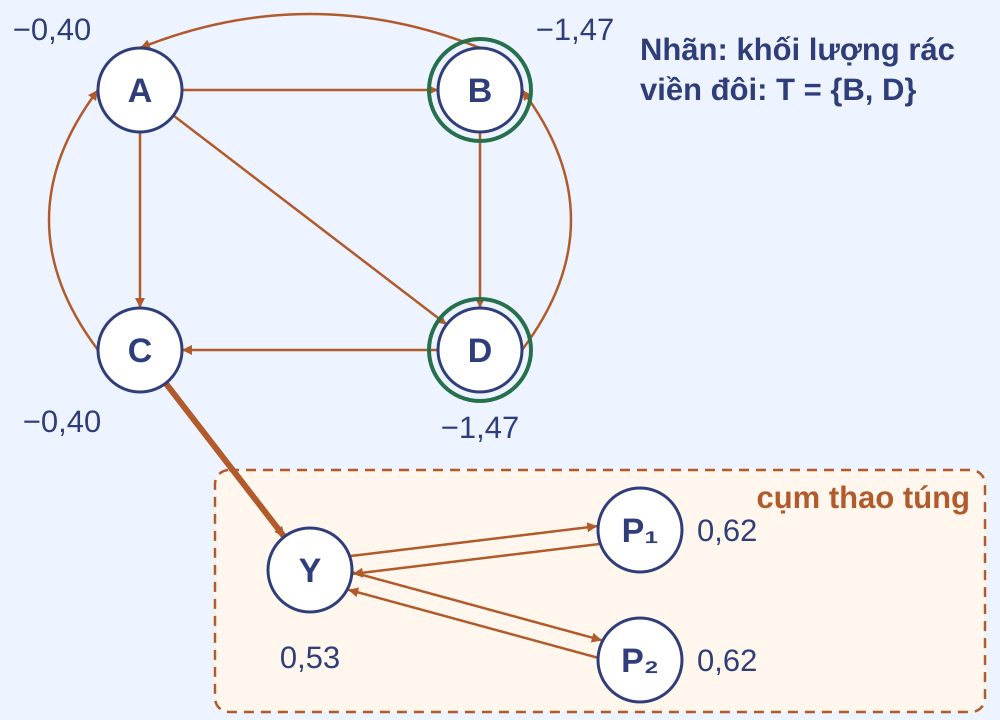
$T=\{\mathrm B,\mathrm D\}$, $\beta=4/5$; $r$ của đồ thị bảy trang, Y đứng đầu.
Tính $\rho$ với $v_T=(0,\tfrac12,0,\tfrac12,0,0,0)^\mathsf T$, rồi $s_i$.
${s_{\mathrm Y}=1-\tfrac{38/261}{9/29}=\tfrac{43}{81}}$;
${s_{\mathrm P_1}=s_{\mathrm P_2}=\tfrac{863}{1395}}$.
Kết luận: ba trang của cụm là ba trang duy nhất có ${s_i>0}$; bốn trang của G4 có ${s_i<0}$.
Cùng đồ thị bảy trang; C có nội dung đáng tin, $\mathrm C\to\mathrm Y$ là một liên kết bình luận.
Tính khối lượng rác khi đưa C vào $T$.
| Tập tin cậy $T$ | $s_{\mathrm Y}$ | $s_{\mathrm P_1}=s_{\mathrm P_2}$ |
|---|---|---|
| $\{\mathrm B,\mathrm D\}$ | $43/81\approx0{,}53$ | $863/1395\approx0{,}62$ |
| $\{\mathrm B,\mathrm C,\mathrm D\}$ | $31/81\approx0{,}38$ | $139/279\approx0{,}50$ |
| $\{\mathrm C\}$ | $7/81\approx0{,}09$ | $\approx0{,}26$ |
Với $T=\{\mathrm C\}$: B, D có $s=39/95\approx0{,}41$, đứng trước cả ba trang của cụm.
Kết luận: loại trang cho phép bình luận khỏi $T$: với $T=\{\mathrm B,\mathrm D\}$, ba trang của cụm đứng đầu thứ tự rà soát.
G4: lặp thô của Bài 03 ($\beta=1$) cho $r_{\mathrm C}=2/9$; TrustRank với ${T=\{\mathrm B,\mathrm D\}}$, $\beta=4/5$: $\rho_{\mathrm C}=19/105$.
Câu hỏi:
Muốn phân biệt trang dẫn đường với trang cung cấp thông tin, phải gán mỗi trang hai điểm định nghĩa lẫn nhau.
Trang trung tâm · Trang uy tín · Ma trận kề · Chuẩn hóa · Giới hạn
Nhu cầu: một điểm không tách trang danh sách học phần khỏi trang học phần.
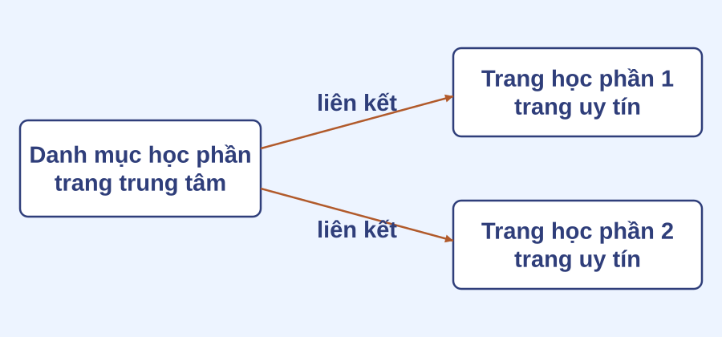
Thuật toán tìm kiếm theo chủ đề dựa trên siêu liên kết (hyperlink-induced topic search, HITS) gán mỗi trang hai điểm.
Trang uy tín (authority) là trang cung cấp thông tin, điểm $a_i$.
Trang trung tâm (hub) là trang chỉ tới nơi có thông tin, điểm $h_i$.
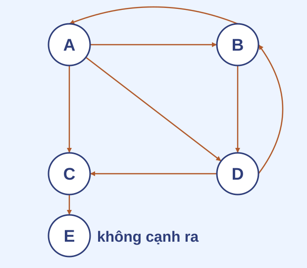
Đồ thị G5
Uy tín cộng trung tâm của trang trỏ tới; trung tâm cộng uy tín của trang được trỏ tới:
$$\tilde a_j=\sum_{i\to j}h_i,\qquad \tilde h_i=\sum_{i\to j}a_j.$$
Chỉ cộng thì giá trị thường tăng không giới hạn; sau mỗi bước chia cho thành phần lớn nhất.
Khởi tạo $h^0=(1,1,1,1,1)^\mathsf T$ theo thứ tự A,…,E.
Tính $\tilde a_j=\sum_{i\to j}h^0_i$ với $h^0=(1,1,1,1,1)^\mathsf T$, rồi $a^1=\tilde a/\max_j\tilde a_j$.
| Trang | Nguồn liên kết vào | Uy tín thô $\tilde a_i$ | $a_i^1=\tilde a_i/2$ |
|---|---|---|---|
| A | B | $1$ | $1/2$ |
| B | A,D | $2$ | $1$ |
| C | A,D | $2$ | $1$ |
| D | A,B | $2$ | $1$ |
| E | C | $1$ | $1/2$ |
Giá trị lớn nhất của $\tilde a$ là $2$: $a^1=(1/2,1,1,1,1/2)^\mathsf T$.
Tính $\tilde h_i=\sum_{i\to j}a^1_j$ với $a^1=(1/2,1,1,1,1/2)^\mathsf T$ vừa tính, rồi chia cho $\max_i\tilde h_i=3$.
| Trang | Tổng uy tín theo cạnh ra | Trung tâm thô $\tilde h_i$ | $h_i^1=\tilde h_i/3$ |
|---|---|---|---|
| A | $1+1+1$ | $3$ | $1$ |
| B | $1/2+1$ | $3/2$ | $1/2$ |
| C | $1/2$ | $1/2$ | $1/6$ |
| D | $1+1$ | $2$ | $2/3$ |
| E | $0$ | $0$ | $0$ |
Bước trung tâm dùng uy tín vừa cập nhật $a^1$, không dùng $a^0$.
Tính vòng hai từ $h^1=(1,1/2,1/6,2/3,0)^\mathsf T$: chia $\tilde a$ cho $5/3$, $\tilde h$ cho $\tilde h_A=29/10$.
| Trang | $\tilde a$ | $a^2$ | $h^2$ |
|---|---|---|---|
| A | $1/2$ | $3/10$ | $1$ |
| B | $5/3$ | $1$ | $12/29$ |
| C | $5/3$ | $1$ | $1/29$ |
| D | $3/2$ | $9/10$ | $20/29$ |
| E | $1/6$ | $1/10$ | $0$ |
Kết luận: trung tâm của C và uy tín của E giảm vì chỉ dựa vào nhau qua cạnh C→E.
$L$ là ma trận kề (adjacency matrix): $L_{ij}=1$ khi $i\to j$, bằng 0 nếu không; hàng là trang nguồn.
| Biểu diễn | Vị trí của cạnh $i\to j$ | Giá trị |
|---|---|---|
| HITS: $L$ | Hàng $i$, cột $j$ | $1$ |
| PageRank: $M_0$ | Hàng $j$, cột $i$ | $1/d_i$ |
HITS cộng điểm qua cạnh; không chia bậc ra.
Định nghĩa. Với véc-tơ $z\ge0$ có $\max_iz_i>0$, chuẩn hóa theo giá trị lớn nhất là $N(z)=z/\max_iz_i$.
Ý nghĩa: giữ tỷ lệ và thứ hạng; giá trị lớn nhất thành $1$.
Ví dụ. $N\big((1,2,2,2,1)^\mathsf T\big)=(1/2,1,1,1,1/2)^\mathsf T$, tổng bằng $4$.
Lưu ý: điểm HITS không là phân phối; $N(0)$ không xác định.
Đầu vào: danh sách $\ell\ge1$ cạnh của $G$, $n$ trang; $\tau>0$, $K\ge1$.
Đầu ra: $h$, $a$, số vòng $t$ và trạng thái dừng.
h ← véc-tơ toàn 1; a ← véc-tơ toàn 1
với t = 1, ..., K:
a' ← N(L chuyển vị * h)
h' ← N(L * a')
Delta_a ← max |a'[i] - a[i]|
Delta_h ← max |h'[i] - h[i]|
a ← a'; h ← h'
nếu max(Delta_a, Delta_h) ≤ tau:
trả về (h, a, t, đạt ngưỡng)
trả về (h, a, K, hết số vòng)
Lượt cạnh thứ hai dùng $a'$ vừa chuẩn hóa; phép chia xác định khi có ít nhất một cạnh.
Bất biến: $h^t\ge0$ và $h^t_i>0$ ở mọi trang $i$ có cạnh ra; đúng khi $t=0$ vì $h^0$ dương.
Bước uy tín: cạnh $i\to j$ cho $\tilde a_j\ge h_i>0$; có ít nhất một cạnh nên $\max_j\tilde a_j>0$.
Bước trung tâm: cạnh $i\to j$ cho $\tilde h_i\ge a_j>0$, nên $\max_i\tilde h_i>0$ và bất biến giữ ở vòng sau.
Kết luận: mọi $a^t$, $h^t$ xác định, không âm, giá trị lớn nhất bằng $1$ (Mệnh đề 04.20).
Hai bước một vòng gộp lại: $h^t=N\big((LL^\mathsf T)^th^0\big)$, phép lặp lũy thừa (power iteration) trên $LL^\mathsf T$.
Giả thiết: $G$ có cạnh; $h^0$ dương; trị riêng lớn nhất $\lambda_1$ của $LL^\mathsf T$ là đơn.
Kết luận: $h^t\to h^*$, $a^t\to a^*$, không phụ thuộc $h^0$, và
Chứng minh. $h^0=\sum_i\gamma_i\psi_i$, $\gamma_1>0$; phần theo $\psi_i$, $i\ge2$, giảm theo $(\lambda_i/\lambda_1)^t$.
Trên G5: $h^*\approx(1;\,0{,}3583;\,0;\,0{,}7165;\,0)^\mathsf T$.
Mô hình: danh sách cạnh, phép toán vô hướng chi phí đơn vị; mỗi vòng duyệt $\ell$ cạnh hai lần.
| Bước | Số lần | Chi phí mỗi lần | Đóng góp |
|---|---|---|---|
| Uy tín: đặt 0, cộng $h_i$ vào $\tilde a_j$, chuẩn hóa | $n$; $\ell$; $2n$ | $1$ | $3n+\ell$ |
| Trung tâm: đặt 0, cộng $a'_j$ vào $\tilde h_i$, chuẩn hóa | $n$; $\ell$; $2n$ | $1$ | $3n+\ell$ |
| Hai độ thay đổi, thay mảng | $n$ | $2$ | $2n$ |
| Tổng | $8n+2\ell=\Theta(n+\ell)$ |
Bộ nhớ: bốn mảng $n$ số, đầu vào $\Theta(n+\ell)$.
Kết luận: không dựng $LL^\mathsf T$, $L^\mathsf TL$ vì chúng có thể đặc hơn $L$.
Từ vòng thứ hai: $h^2=(1,\,12/29,\,1/29,\,20/29,\,0)^\mathsf T$.
Câu hỏi:
Tính uy tín thô $\tilde a_D$ và điểm chuẩn hóa $a_D^3$.
Nếu mỗi nguồn chia $h_i$ cho số liên kết ra: tính lại $\tilde a_D$; nêu định nghĩa bị thay.
Tính $a_E^3$; giải thích vì sao E có uy tín dương dù không có cạnh ra.
Muốn trả lời bài toán xếp hạng liên kết, phải nêu giả thiết, bảo đảm và chi phí của từng phương pháp.
Giả thiết · Bảo đảm và chi phí · Câu trả lời · Câu hỏi tự kiểm tra · Tài liệu đọc
| Kết quả | Giả thiết không được bỏ | Công thức hoặc thuật toán |
|---|---|---|
| Bảo toàn tổng điểm | $r^0$ là phân phối; $v\ge0$, $\sum_iv_i=1$; bù nút cụt đều | $\sum_ir_i^{t+1}=1$ |
| Cận sai số khi dừng | $0<\beta<1$; $v$ không phụ thuộc $r$ | $\|r^{t+1}-r^*_v\|_1\le\dfrac{\beta}{1-\beta}\Delta_t$ |
| Ghép điểm chủ đề | cùng $\bar M$, $\beta$; $v=\sum_\theta w_\theta v^{(\theta)}$, $w_\theta\ge0$, $\sum_\theta w_\theta=1$ | ${r^*_v=\sum_\theta w_\theta r^{(\theta)}}$ |
| Điểm trang đích | đúng kiến trúc cụm; không nút cụt; dịch chuyển đều, ${b=(1-\beta)/n}$ | $y=\dfrac{x+\beta mb+b}{1-\beta^2}$ |
| Khối lượng rác | $r$, $\rho$ cùng đồ thị, cùng $\beta$, cùng bù; $r_i>0$ | $s_i=1-\rho_i/r_i$ |
| Giới hạn HITS | có cạnh; $h^0$ dương; $\lambda_1$ của $LL^\mathsf T$ đơn | ${LL^\mathsf Th^*=\lambda_1h^*}$, ${L^\mathsf TLa^*=\lambda_1a^*}$ |
| Thuật toán | Đầu vào | Bảo đảm | Chi phí |
|---|---|---|---|
| PageRank theo chủ đề | $G$, $\beta$, phân phối $v$, $\tau$, $K$ | phân phối; sai số $\le\dfrac{\beta\Delta_t}{1-\beta}$ | $3n+\ell$ mỗi vòng; truy vấn $\Theta(kc)$ |
| TrustRank | như trên, $v_T$ từ tập $T$ đánh giá bên ngoài | như trên | $3n+\ell$ mỗi vòng |
| Khối lượng rác | $r$, $\rho$ cùng mô hình, $r_i>0$ | $s_i\le1$; $\sum_ir_is_i=0$ | hai phép lặp, thêm $\Theta(n)$ |
| HITS | đồ thị có ít nhất một cạnh, $\tau$, $K$ | $h$, $a$ không âm, giá trị lớn nhất $1$ | $8n+2\ell$ mỗi vòng |
Kết luận: $16$ véc-tơ chủ đề cùng trọng số: $2{,}56\cdot10^{11}$ byte thay $8\cdot10^{18}$ byte.
Câu hỏi: trả lời và nêu kết quả đã dùng.
Câu hỏi: trả lời và nêu kết quả đã dùng.
Nguồn: Leskovec, Rajaraman, Ullman (2020), Mining of Massive Datasets, ấn bản 3, Chương 5, §§5.3–5.5, tr.195–208; Hình 5.1, tr.178; http://www.mmds.org.
Nguồn: trang chiếu MMDS Chương 5, phần hai; Stanford CS246 (2026), bài “Link spam”; Blum, Hopcroft, Kannan, Foundations of Data Science, §3.7, §3.9.4.
Bài 05: ước lượng độ tương đồng Jaccard, đại lượng MMDS dùng để suy trọng số $w_\theta$, bằng chữ ký MinHash.
Muốn kiểm các phương trình đã học, phải giải lại chúng trên dữ liệu và biến thể của giáo trình.
Hai tập dịch chuyển · Biến thể cụm thao túng · HITS trên chuỗi có khuyên
$\beta=4/5$, kế thừa MMDS Ví dụ 5.10; tám cạnh của G4 giữ nguyên.
Câu hỏi: tính PageRank theo chủ đề khi tập dịch chuyển là (a) chỉ A; (b) A và C.
Trình bày hai phân phối dịch chuyển, hệ phương trình và hai véc-tơ theo thứ tự A, B, C, D.
Kiểm tổng bằng 1 và phương trình cố định.
Nguồn: MMDS 3e, Bài 5.3.1(a, b), §5.3.5, tr.199.
Lời giải: (a) $v=(1,0,0,0)^\mathsf T$; trừ hàng D khỏi hàng B: $r_B=r_D$; hàng C trùng hàng B: $r_C=r_B=\sigma$.
Hàng B: $\sigma=\tfrac4{15}r_A+\tfrac25\sigma$, tức $\sigma=\tfrac49r_A$; tổng $1$: $r=(3/7,4/21,4/21,4/21)^\mathsf T$.
(b) $v=(1/2,0,1/2,0)^\mathsf T$: hàng B, D như (a), $\sigma=\tfrac49r_A$; hàng C thêm $\tfrac1{10}$: $r_C=\sigma+\tfrac1{10}$.
Tổng $1$: $\tfrac73r_A=\tfrac9{10}$, nên $r=(27/70,6/35,19/70,6/35)^\mathsf T$.
Kiểm tra hàng A của (b): $\tfrac25\cdot\tfrac6{35}+\tfrac45\cdot\tfrac{19}{70}+\tfrac1{10}=\tfrac{27}{70}$; hai nghiệm có tổng $1$.
Giữ mô hình MMDS Hình 5.16, trừ cạnh ra của các hỗ trợ; $x$ đã gồm $\beta$; $b=(1-\beta)/n$.
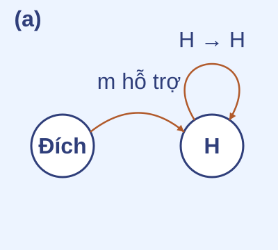
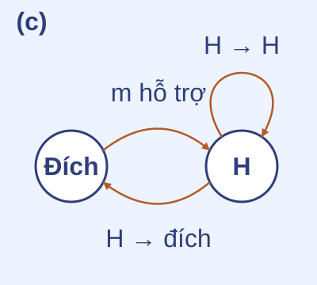
Câu hỏi: phân tích lại khi mỗi hỗ trợ (a) chỉ có khuyên; (c) có khuyên và cạnh tới đích.
Viết phương trình của $p$, $y$ và biểu thức $y$ theo $x$, $m$, $n$, $\beta$; ghi rõ chính xác hay xấp xỉ.
Nguồn: MMDS 3e, Bài 5.4.1(a, c), §5.4.6, tr.203–204.
Lời giải: (a) $p=\tfrac{\beta y}m+\beta p+b$, $y=x+b$: không còn cạnh hỗ trợ→đích, nên $y\approx x$.
(c) Hai cạnh ra mỗi hỗ trợ: $p=\tfrac{\beta y}m+\tfrac\beta2p+b$, $y=x+\tfrac{\beta m}2p+b$.
Khử $p$: $(2-\beta)y=(2-\beta)(x+b)+\beta^2y+\beta mb$, với $2-\beta-\beta^2=(1-\beta)(2+\beta)>0$:
Kết luận: $\beta=0{,}85$: hệ số của $x$ khoảng $2{,}69$, nhỏ hơn $3{,}60$ của cụm gốc.
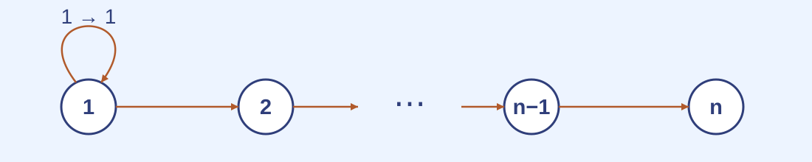
Đồ thị có $n$ đỉnh, cạnh $1\to1$ và $i\to i+1$ với $1\le i<n$; $n\ge1$.
Khởi tạo $h^0=a^0=\mathbf1$; sau mỗi phép nhân, chuẩn hóa phần tử lớn nhất bằng 1.
Câu hỏi: tính các véc-tơ trung tâm và uy tín theo $n$.
Nêu hai véc-tơ giới hạn, lập luận từ phép lặp hoặc ma trận, và các trường hợp $n=1$, $n=2$.
Nguồn: MMDS 3e, Bài 5.5.2, §5.5.3, tr.208; Hình 5.9, tr.189.
Lời giải: $n\ge2$: các hàng của $L$ có số 1 ở các cột rời nhau, nên $LL^\mathsf T=\mathrm{diag}(2,1,\ldots,1,0)$.
Từ $h^0=\mathbf 1$: $a^1=\mathbf 1$, $h^1=(1,1/2,\ldots,1/2,0)^\mathsf T$; quy nạp, với $t\ge1$:
Giới hạn: $h^*=(1,0,\ldots,0)^\mathsf T$, $a^*=(1,1,0,\ldots,0)^\mathsf T$.
$n=2$: $h^t=(1,0)^\mathsf T$, $a^t=(1,1)^\mathsf T$ từ vòng đầu; $n=1$: $L=[1]$, $h^t=a^t=(1)$.